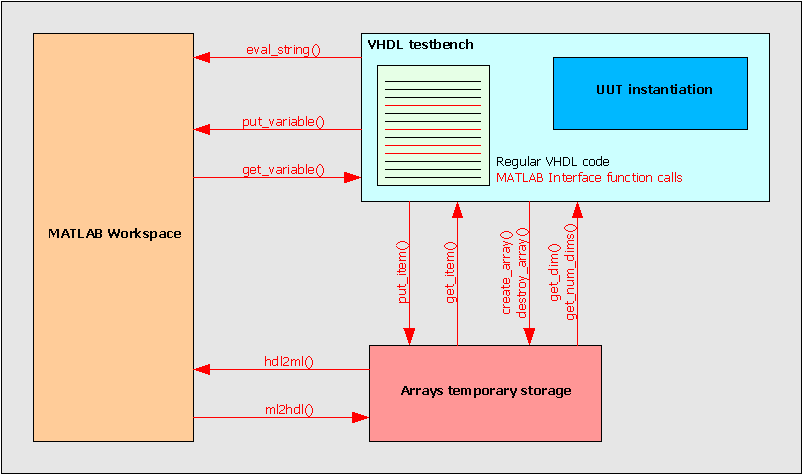
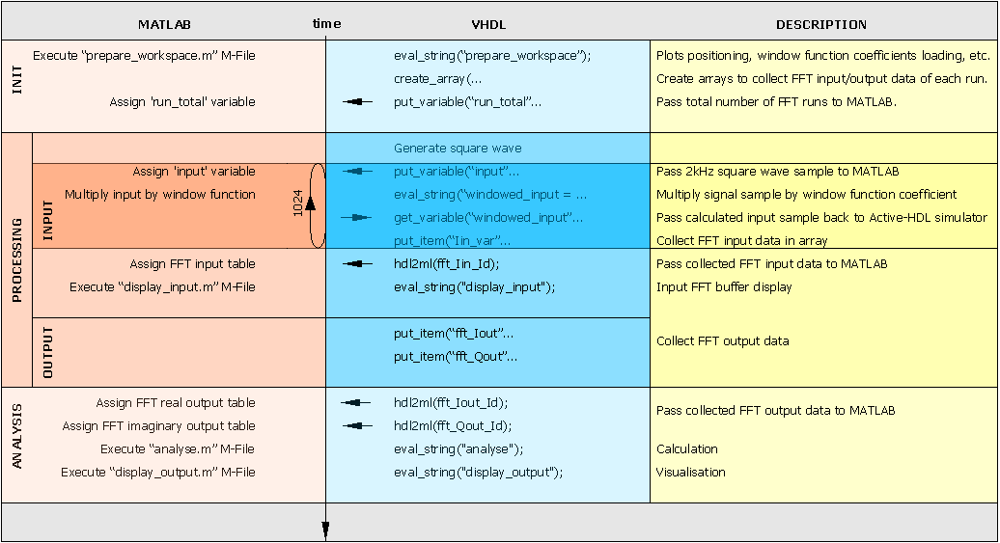
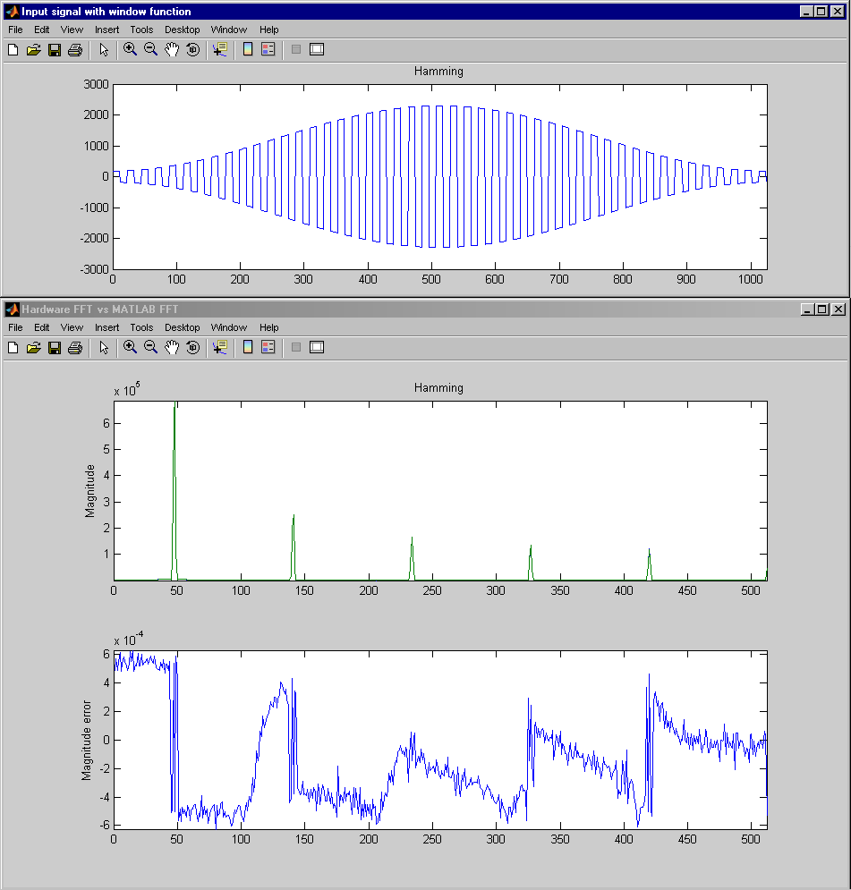

The MATLAB_FFT_ANALYSIS is a simple DSP design using 1024-point FFT component.
The purpose of this design is to demonstrate the capabilities of the Active-HDL CoSimulation Interface to MATLAB®.
MATLAB® software can be downloaded from the MathWorks website www.mathworks.com.
The design consists of an FFT design and a testbench, both described in VHDL. The testbench uses a set of foreign functions and procedures provided by the Active-HDL CoSimulation Interface to MATLAB. These functions allow to move a part of the testbench to MATLAB environment and use its analysis and visualization capabilities.

Fig. 1. Active-HDL CoSimulation Interface to MATLAB
The VHDL part of testbench generates FFT control signals (start, reset, clk, ce, inv) and FFT input 2kHz square wave, instantiates FFT entity, and uses functions responsible for control over MATLAB workspace and data transfer between Active-HDL and MATLAB workspace.
The MATLAB part of testbench takes FFT input 2kHz square wave generated by VHDL part, multiplies each sample by window function coefficient and gives it back to VHDL part in order to drive FFT input. It also takes this input, calculates FFT using MATLAB built-in fft() function and compares calculated FFT with outputs of FFT model written in VHDL. Finally, it draws plots for data visualization. Testbench is created as Block Diagram what gives good readability.

Fig. 2. The testbench scenario
Before the very first use of the interface, type in the following command at the command prompt: "matlab /regserver". The command needs to be entered only once. (You do not need to re-enter it even after a system restart.)
Before cosimulation, all folders containing M-Files and other files reffered in MATLAB during cosimulation, must be added to MATLAB search path. The only exception is when all necessary files are located in folder which is Active-HDL current folder (pwd) at the moment of cosimulation start (when asim command is invoked). In case of this design, this is true as long as current folder is set to default "$dsn/src".
Also, the "$MATLAB\bin\win32" folder (where $MATLAB stands for the MATLAB installation folder) must be added to the system path.
The macro files attached to the design are provided for automation of the cosimulation process. Use the 'compile.do' macro to compile the necessary design files. Use the 'run.do' macro to start the cosimulation. During simulation, the 'MATLAB Command Window' opens, the Workspace window is displayed, and a set of plots visualize the analyzed data.
The connection to MATLAB is established automatically when any of following subprograms is reached in the VHDL code:
Here, in this example, the first executed procedure call is eval_string().
All messages reported by the MATLAB during cosimulation are displayed in the Active-HDL Console window. You may see some error messages caused by intentional mistakes introduced in the executed M-Files.
As the cosimulation advances the MATLAB Workspace window and a plot figure displaying subsequent contents of FFT input buffer (the plot title applied shows the type of window function) can be observed.
Right before the simulation end a set of plots with analyzed data for selected window function is displayed.

Fig. 3. Analysis results
The Fast Fourier Transform implementation has been downloaded from the www.opencores.org. For copyright notices, please refer to the aforementioned website.